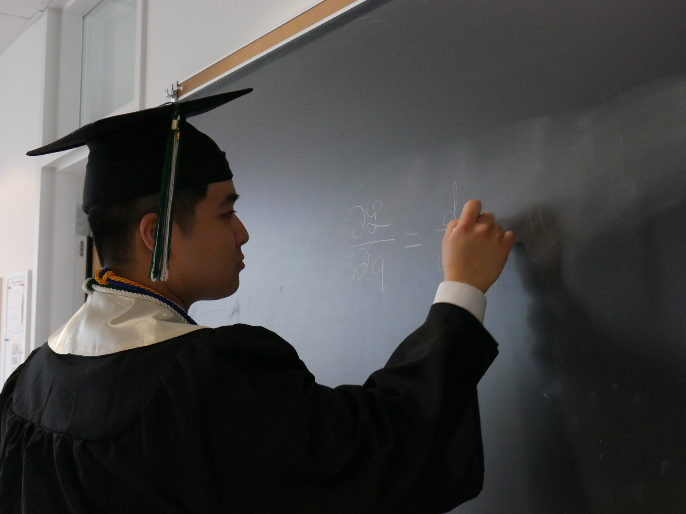

About Me

Education: I am currently a Ph.D. candidate in the Astrophysical & Planetary
Sciences department at the University of Colorado Boulder and a graduate research assistant
under JILA. I graduated from Truman State University in 2019 with Bachelor's degrees in
physics and mathematics.
Research Interests: I am interested in the gravitational dynamics of bodies in orbit
around compact objects. I currently work with
Dr. Ann-Marie Madigan on the dynamics of
eccentric disks in various astrophysical contexts including stars around supermassive black
holes and planetesimals around white dwarfs. I also work with
Dr. Smadar Naoz on the stellar dynamics of our
Milky Way Galactic Center. Previously, I worked with
Dr. Jason Dexter on thermal reprocessing
models for changing-look quasars.
Publications:
Check out my work on ADS!
Curriculum Vitae:
Check out my CV here!
Research
The Formation of Eccentric Nuclear Disks from Gravitational Wave Recoil Kicks
The closest massive galactic neighbor, Andromeda, hosts a supermassive black hole that is
surrounded by a lopsided, eccentric disk of stars. The merger of galaxies and the
subsequent merger of the central supermassive black holes may be key in explaining the
formation of these asymmetric stellar disks. The anisotropic emission of gravitational
waves during the merger of two supermassive black holes causes a recoil kick to be imparted
on the merger remnant. We showed in this
2021 letter that
eccentric stellars disks with stars on apse-aligned orbits can directly form as a result
of such a kick. We further showed in this
2023 paper
that the surrounding star cluster following a recoil kick exhibits unique density
and velocity structures that may be used to observationally detect recoiling supermassive
black holes. Eccentric disks are able to enhance the rate of tidal disruption events, where
stars become torn apart by the black hole due to strong tidal gravity. The rate can be 3 or
4 orders of magnitude higher in a lopsided disk compared to a symmetric one! This enhanced
tidal disruption rate is indeed observed in merging/post-merger galaxies. This project is
being carried out with my primary advisor
Dr. Ann-Marie Madigan. See the
Black Hole Dynamics page for more details!
Evidence of a Recent Merger in the Galactic Center/b>
We have applied the same mechanism of forming an eccentric disk via a
gravitational wave recoil kick to explain the peculiar structure of the Milky Way
Galactic Center. In the Galactic Center, there is a coherent disk of young stars
between 0.05 and 0.5 pc, and the S-stars which are even closer in at < 0.04 pc are highly
eccentric with a nearly isotropic distribution in inclination. We will show in a 2024 letter
(in prep) that a low eccentricity, apse-aligned disk evolves to reproduce much of the
eccentricity and inclination distributions of the S-star cluster and the surrounding
disk within a few Myr suggesting a recent merger between an intermediate-mass black
hole and Sagittarius A*. This research project is being conducted in collaboration with
Dr. Smadar Naoz at UCLA. See the
Galactic Center Dynamics page for more details!
White Dwarf Pollution from Natal Kicks
Many astrophysical bodies receive kicks, so the above dynamics are relevant for other
contexts. A white dwarf receives a natal kick during its birth due to anisotropic
mass loss during the asymptotic giant branch. As a result, an eccentric disk of planetesimals
should surround the white dwarf after the kick. The eccentric debris disk can then
efficiently throw planetesimals toward the white dwarf and increase the rate of
planetesimal tidal disruption events. This mechanism can explain the abundance of
polluted white dwarfs, white dwarfs with unexpectedly high amounts of heavy metals on
their surface. This work will be presented in a 2024 letter (submitted).
This project is being worked on with
Dr. Ann-Marie Madigan and assisted by an
CU undergraduate student, Selah McIntyre. See the
White Dwarf Dynamics page for more details!
Reprocessing Models for Hypervariable Quasars
Quasars are extremely luminous active galactic nuclei, supermassive black holes which are
actively feeding on their surrounding accretion disks. While standard accretion disk theory
suggests that significant changes in the brightness of a quasar should take longer than ten
thousand years, the Sloan Digital Sky Survey (SDSS) has discovered quasars that change in
luminosity by up to factors of ~10 on much shorter timescales of months to years. These
hypervariable quasars challenge our theories of accretion around supermassive black holes.
One of the theories that can explain the hypervariable behavior is thermal reprocessing:
the X-ray or extreme UV light from the quasar inner environment could be shining on an
accretion structure that absorbs and re-emits the light at longer wavelengths. This can
explain the large-amplitude, correlated variability we observe in the optical light curves
of hypervariable quasars. We showed in a
2023 paper that the
optical light curves of most of the hypervariable quasars observed by SDSS can be explained
by thermal reprocessing in a thick accretion structure (rather than a thin disk). The
standard thin disk is heavily disfavored by our model, and our work presented a first-order
classification scheme for uncovering the likely reprocessing geometries of hypervariable
quasars. This project was advised by
Dr. Jason Dexter. See the
Hypervariable Quasars page for more details!
Black Hole Dynamics
Motivation & Background
The closest massive galactic neighbor, Andromeda, hosts a supermassive black hole that is
surrounded by a lopsided, eccentric disk of stars. The merger of galaxies and the
subsequent merger of the central supermassive black holes may be key in explaining the
formation of these asymmetric stellar disks. The anisotropic emission of gravitational
waves during the merger of two supermassive black holes causes a recoil kick to be imparted
on the merger remnant. We showed in this
2021 letter that
eccentric stellars disks with stars on apse-aligned orbits can directly form as a result
of such a kick. We further showed in this
2023 paper
that the surrounding star cluster following a recoil kick exhibits unique density
and velocity structures that may be used to observationally detect recoiling supermassive
black holes. Eccentric disks are able to enhance the rate of tidal disruption events, where
stars become torn apart by the black hole due to strong tidal gravity. The rate can be 3 or
4 orders of magnitude higher in a lopsided disk compared to a symmetric one! This enhanced
tidal disruption rate is indeed observed in merging/post-merger galaxies. This project is
being carried out with my primary advisor
Dr. Ann-Marie Madigan. See the
Black Hole Dynamics page for more details!
Research Interests: I am interested in the gravitational dynamics of bodies in orbit
around compact objects. I currently work with
Dr. Ann-Marie Madigan on the dynamics of
eccentric disks in various astrophysical contexts including stars around supermassive black
holes and planetesimals around white dwarfs. I also work with
Dr. Smadar Naoz on the stellar dynamics of our
Milky Way Galactic Center. Previously, I worked with
Dr. Jason Dexter on thermal reprocessing
models for changing-look quasars.
Publications:
Check out my work on ADS!
Curriculum Vitae:
Check out my CV here!
Dynamics of the Galactic Center
Education: I am currently a Ph.D. candidate in the Astrophysical & Planetary
Sciences department at the University of Colorado Boulder and a graduate research assistant
under JILA. I graduated from Truman State University in 2019 with Bachelor's degrees in
physics and mathematics.
Research Interests: I am interested in the gravitational dynamics of bodies in orbit
around compact objects. I currently work with
Dr. Ann-Marie Madigan on the dynamics of
eccentric disks in various astrophysical contexts including stars around supermassive black
holes and planetesimals around white dwarfs. I also work with
Dr. Smadar Naoz on the stellar dynamics of our
Milky Way Galactic Center. Previously, I worked with
Dr. Jason Dexter on thermal reprocessing
models for changing-look quasars.
Publications:
Check out my work on ADS!
Curriculum Vitae:
Check out my CV here!
Dynamics of Debris Disks around White Dwarfs
Education: I am currently a Ph.D. candidate in the Astrophysical & Planetary
Sciences department at the University of Colorado Boulder and a graduate research assistant
under JILA. I graduated from Truman State University in 2019 with Bachelor's degrees in
physics and mathematics.
Research Interests: I am interested in the gravitational dynamics of bodies in orbit
around compact objects. I currently work with
Dr. Ann-Marie Madigan on the dynamics of
eccentric disks in various astrophysical contexts including stars around supermassive black
holes and planetesimals around white dwarfs. I also work with
Dr. Smadar Naoz on the stellar dynamics of our
Milky Way Galactic Center. Previously, I worked with
Dr. Jason Dexter on thermal reprocessing
models for changing-look quasars.
Publications:
Check out my work on ADS!
Curriculum Vitae:
Check out my CV here!
Reprocessing Models for Hypervariable Quasars
Education: I am currently a Ph.D. candidate in the Astrophysical & Planetary
Sciences department at the University of Colorado Boulder and a graduate research assistant
under JILA. I graduated from Truman State University in 2019 with Bachelor's degrees in
physics and mathematics.
Research Interests: I am interested in the gravitational dynamics of bodies in orbit
around compact objects. I currently work with
Dr. Ann-Marie Madigan on the dynamics of
eccentric disks in various astrophysical contexts including stars around supermassive black
holes and planetesimals around white dwarfs. I also work with
Dr. Smadar Naoz on the stellar dynamics of our
Milky Way Galactic Center. Previously, I worked with
Dr. Jason Dexter on thermal reprocessing
models for changing-look quasars.
Publications:
Check out my work on ADS!
Curriculum Vitae:
Check out my CV here!
Couresework

CU Boulder:
ASTR 5110 - Atomic and Molecular Processes
ASTR 5120 - Radiative and Dynamical Processes
ASTR 5140 - Astro/Space Plasmas
ASTR 5400 - Introduction to Fluid Dynamics
ASTR 5410 - Fluid Instabilities, Waves, and Turbulence
ASTR 5540 - Mathematical Methods
ASTR 5550 - Observations, Data Analysis, and Statistics
ASTR 5700 - Stellar Astrophysics
ASTR 5710 - High-Energy Astrophysics
ASTR 5720 - Galaxies
ASTR 5820 - Origin and Evolution of Planetary Systems
Truman State University:
PHYS 320 – Electronics
PHYS 375 – Vibrations and Waves
PHYS 382 – Mathematical Physics
PHYS 386 – Classical Mechanics
PHYS 446 – Advanced Laboratory
PHYS 482 – Electricity & Magnetism
PHYS 486 – Thermodynamics and Statistical Mechanics
PHYS 518 – Astrophysics
PHYS 580 – Quantum Mechanics
MATH 335 – Game Theory
MATH 451 – Algebraic Structures
MATH 461 – Advanced Calculus
MATH 465 – Differential Geometry
MATH 488 – Relativity Theory
MATH 564 – Advanced Linear Algebra
CS 170 – Introduction to Computer Science (Python)
CS 181 – Foundations of Computer Science (Java)
CS 250 – Systems Programming (C and C++)
STAT 290 – Statistics
STAT 478 – Regression Analysis
Contact
Email: tatsuya.akiba@colorado.edu
Office: JILA Tower A907